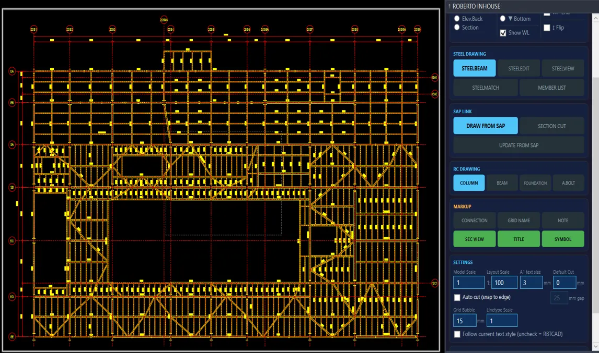
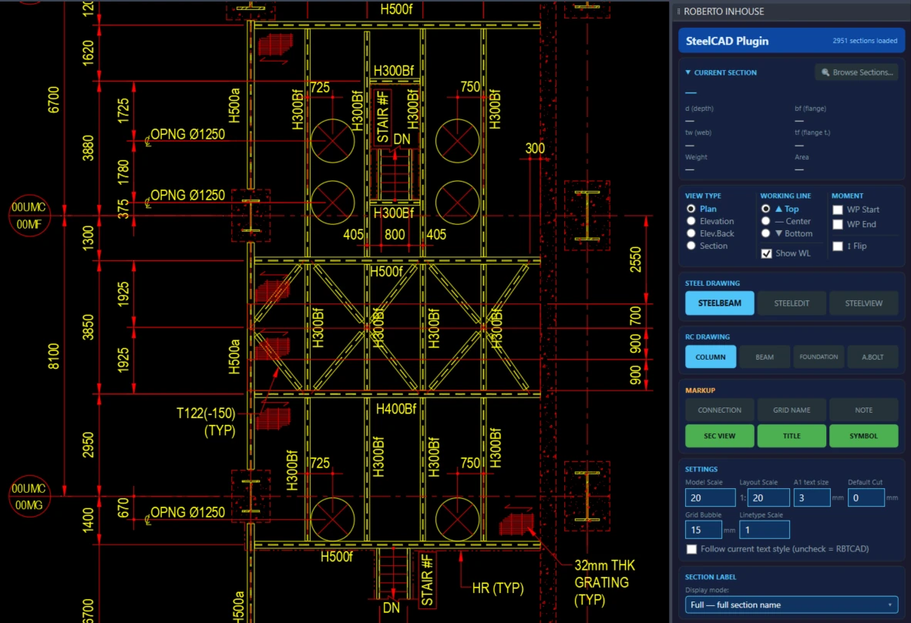
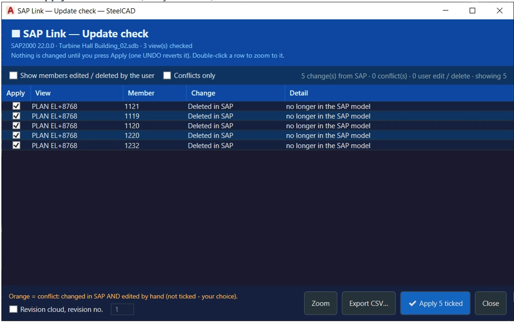
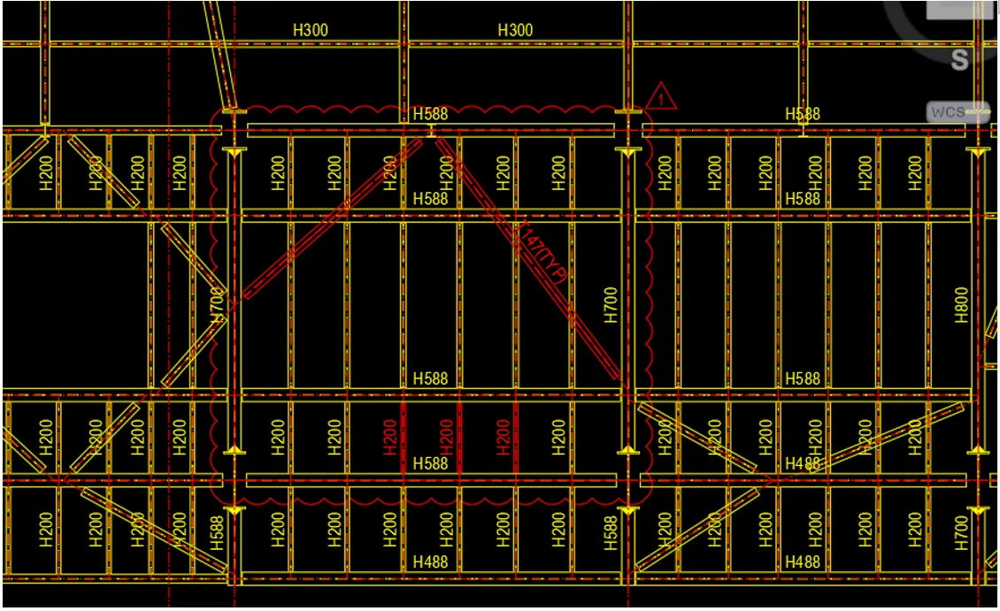
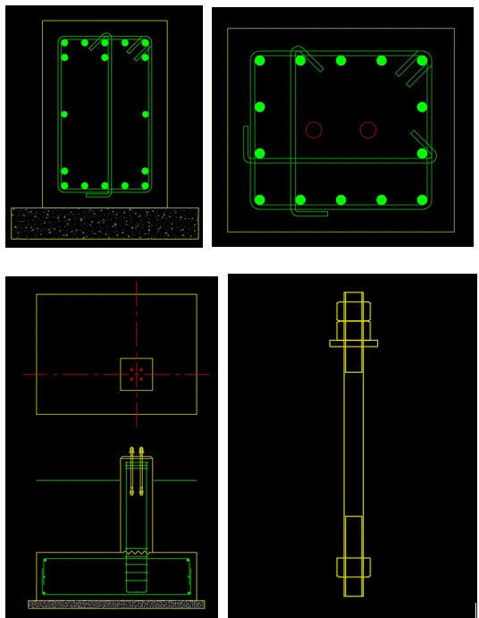
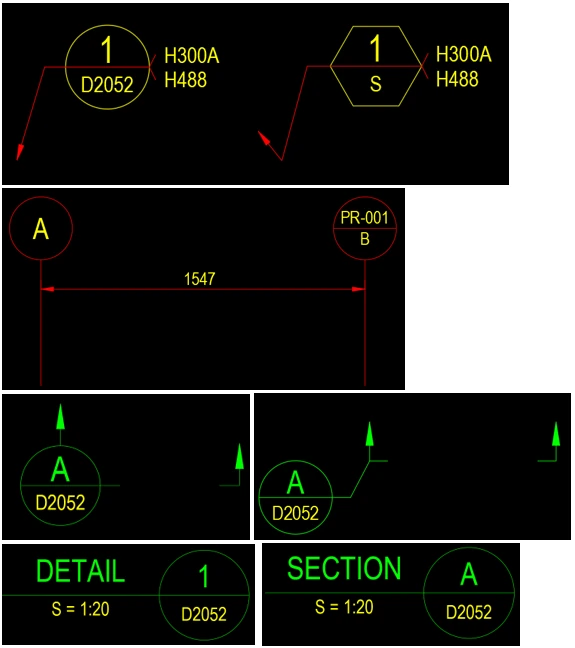
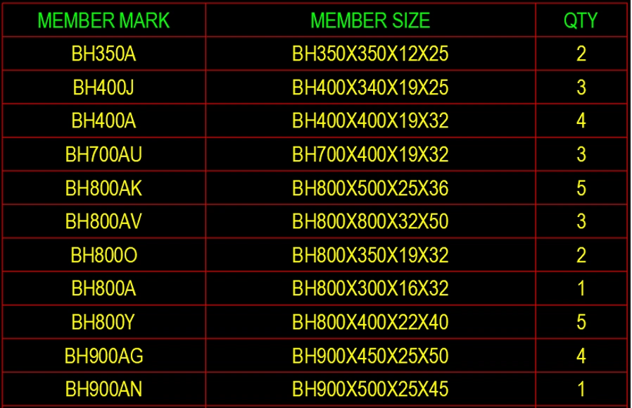

Kết cấu thép
SteelCAD — Plugin vẽ kết cấu cho AutoCAD
Plugin AutoCAD triển khai bản vẽ thép và BTCT bằng cấu kiện thông minh — và tự sinh mặt bằng, mặt đứng, mặt cắt thẳng từ mô hình SAP2000.

⤢






Tính năng chính
- <b>SAP Link</b>: tự sinh mặt bằng, mặt đứng, mặt cắt từ mô hình SAP2000, kèm lưới trục, kích thước và cao độ
- <b>Cập nhật khi mô hình đổi</b> (SAPUPDATE) — chỉ sửa phần cần, giữ nguyên phần đã chỉnh tay
- Mặt cắt tuỳ chọn trên mặt bằng, giới hạn theo hai điểm và khoảng cao độ
- <b>Beam thông minh</b>: mỗi cấu kiện mang sẵn tiết diện, điểm làm việc, đoạn cắt, nhãn, liên kết moment — sửa bằng grip, không vẽ lại
- H, C, L, T, hộp, ống — 4 kiểu thể hiện, tự cắt đầu cấu kiện tại gối
- Thư viện <b>~2.950 tiết diện</b>, mở rộng được
- Sửa hàng loạt, sao chép thuộc tính, bảng thống kê MARK / SIZE / QTY
- <b>BTCT</b>: mặt cắt cột, dầm, móng và bu-lông neo
- Ký hiệu: liên kết, trục, ghi chú, mặt cắt, tên chi tiết
Yêu cầu hệ thống
Windows 64-bit, AutoCAD bản đầy đủ 2015–2024 (không hỗ trợ AutoCAD LT). SAP Link cần SAP2000 cài trên cùng máy.